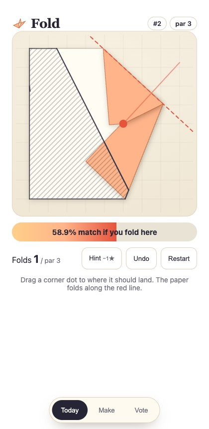
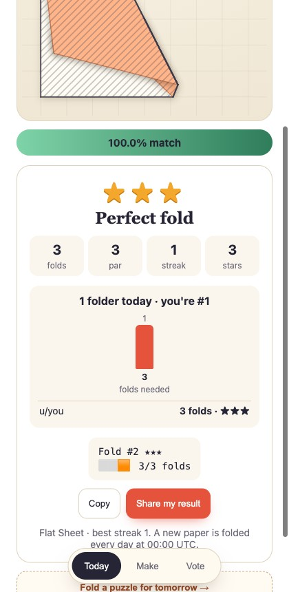
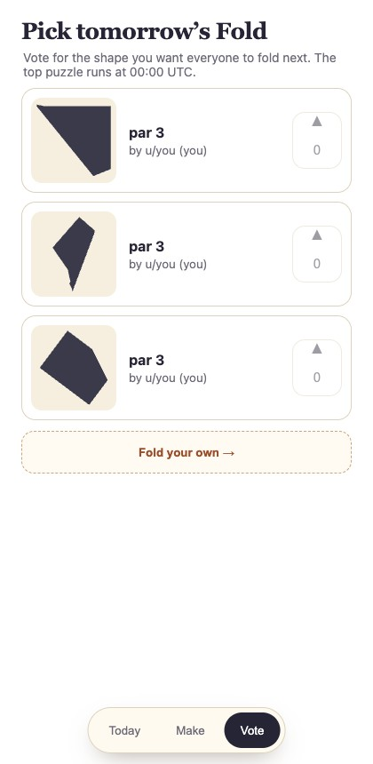
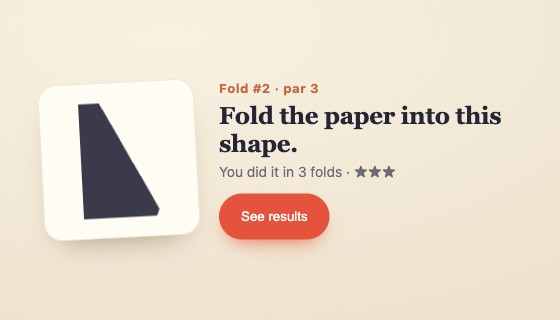

A new paper every day. Fold it into the shape.
Everyone gets the same paper square and the same shape. Drag a corner to where it should land, and the paper creases and flips like the real thing. Match the shape in as few folds as you can, then compare with everyone who folded it today.

Three moves to learn it
No rules screen, no tutorial maze. You get it in the first fold.
Look at the shape
The striped outline is today's target. Your paper starts as a plain square.
Drag a corner
Press a corner dot and drag it to where it should land. The red line shows the crease, and the meter shows how close that fold gets you before you let go.
Match it in par
Hit 97% and it counts. Three stars: match the shape, do it in par folds or fewer, and skip the hint.
One puzzle a day, for everyone
A new Fold is posted at 00:00 UTC, the same paper for every player in every time zone. The week gets harder as it goes.
Par folds by weekday.


Tomorrow's puzzle is made by players
The Make tab lets anyone fold a puzzle of their own, from 2 to 6 folds. Fold checks every fold as you make it, so every community puzzle is solvable and reads well.
Puzzles are stored as folds, never free text, so there's nothing to moderate.
Right in your feed
Each day's post shows the shape and how many people have folded it. Tap once and the game opens right inside the post.
Fold is in testing on Reddit for the Game of the Day Hackathon. The public subreddit link goes here when it opens.

Questions
Is every puzzle solvable?
Yes. Daily puzzles are made from a real sequence of folds, and community puzzles are recorded as the folds their maker did. The par is the number of folds it took.
Can I cheat my score?
No. Your phone only sends the folds you made. The server replays them on a fresh square and works out the match itself.
What if I'm stuck?
Tap Hint to see the first fold. It costs one star. Undo and Restart are free.
Does it post or comment for me?
Only when you tap Share my result, which replies to the pinned daily comment. Nothing else is ever posted in your name.
What does it store?
Your Reddit username, your results, streak and stars, and any puzzles you make, kept inside Reddit's own app storage. No ads, no tracking, nothing sold.
What time is the new puzzle?
00:00 UTC every day, the same moment everywhere: 5:30 am in Mumbai, 8 am in Singapore, 7 pm (the evening before) in New York.